Cruise Control: Root Locus Controller Design
Key MATLAB commands used in this tutorial are: tf , rlocus , feedback , step
Contents
System model
The transfer function model for the cruise control problem is given below. Please see the Cruise Control: System Modeling page for the derivation.
(1)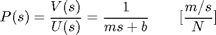
System parameters
For this example, let's assume that the parameters of the system are
(m) vehicle mass 1000 kg
(b) damping coefficient 50 N.s/m
(r) reference speed 10 m/s
and the block diagram of a typical unity feedback system is shown below.

Performance specifications
- Rise time < 5 sec
- Overshoot < 10%
- Steady-state error < 2%
Proportional control
Recall from the Introduction: Root Locus Controller Design page, the root-locus plot shows the locations of all possible closed-loop poles when a single gain is varied from zero to infinity. Thus, only a proportional controller, K_P, will be considered to solve this problem. The closed-loop transfer function becomes:
(2)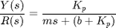
Also, from the Introduction: Root Locus Controller Design page, we know that the MATLAB command sgrid can be used to display an acceptable region of the root-locus plot. To use the sgrid, both the damping ratio, zeta, and the natural frequency, Wn, need to be determined first. The following two equations will be used to find the damping ratio and the natural frequency:
(3)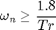
(4)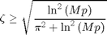
where
- wn = Natural Frequency [rad\s]
- zeta = Damping Ratio
- Tr = Rise time [s]
- Mp = Maximum Overshoot
One of our design criteria is to have a rise time of less than 5 seconds. From the first equation, we see that the natural frequency must be greater than 0.36. Also using the second equation, we see that the damping ratio must be greater than 0.6, since the maximum overshoot must be less than 10%.
Now, we are ready to generate a root-locus plot and use the sgrid to find an acceptable region on the root-locus. Create a new m-file and enter the following commands.
m = 1000;
b = 50;
r = 10;
s = tf('s');
P_cruise = 1/(m*s+b);
rlocus(P_cruise)
axis([-0.6 0 -0.6 0.6]);
sgrid(0.6, 0.36)
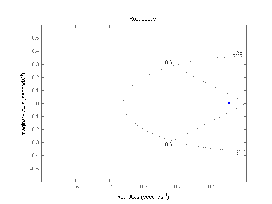 The two dotted lines in an angle indicate the locations of constant damping ratio (zeta=0.6); the damping ratio is greater than 0.6 in between these lines and less than 0.6 outside the lines. The semi-ellipse indicates the locations of constant natural frequency (Wn=0.36); the natural frequency is greater than 0.36 outside the semi-ellipse, and smaller than 0.36 inside.
We can then find a gain to place the closed-loop poles in the desired region by employing the rlocfind command. Add the code [Kp,poles]=rlocfind(P_cruise) onto the end of your m-file to help you choose a specific loop gain. After running in the command window, you should see a prompt asking you to pick a point on the root-locus plot. Since you want to pick a point in between dotted lines (zeta>0.6) and outside the semi-ellipse (Wn>0.36), click on the real axis just outside the semi-ellipse (around -0.4) as indicated by the cross mark in the following figure.

After doing this, you should see the following output in the MATLAB command window.
Select a point in the graphics window
selected_point =
-0.4002 + 0.0019i
Kp =
350.2419
poles =
-0.4002
Note that the value returned from your MATLAB command window may not be exactly the same, but should at least have the same order of magnitude. This returned value can be used as the gain for the compensator and the closed-loop step response can be generated as follows.
Kp = 350.2419; sys_cl = feedback(Kp*P_cruise,1); t = 0:0.1:20; step(r*sys_cl,t)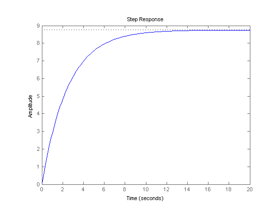
With the gain Kp you just chose, the rise time and the overshoot criteria have been met; however, a steady-state error of more than 10% remains.
Lag controller
To reduce the steady-state error, a lag controller will be added to the system. The transfer function of the lag controller is:
(5)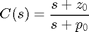
The closed-loop transfer function (not including Kp) now becomes:
(6)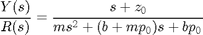
Finally, including the loop gain Kp, the closed-loop transfer function becomes:
(7)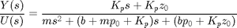
If you read the "Lag or Phase-Lag Compensator using Root-Locus" section in the Lead and Lag Compensator Design page, the pole and the zero of a lag controller need to be placed close together. Also, it states that the steady-state error will be reduced by a factor of zo/po. For these reasons, let zo equal 0.3 and po equal 0.03.
Create a new m-file, and enter the following commands.
zo = 0.3;
po = 0.03;
s = tf('s');
C_lag = (s+zo)/(s+po);
rlocus(C_lag*P_cruise);
axis([-0.6 0 -0.4 0.4])
sgrid(0.6,0.36);
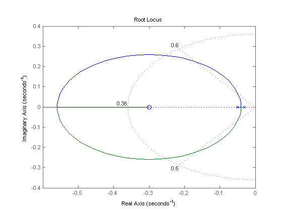 Using the rlocfind command again, we can choose a new loop gain Kp. Enter the code [Kp,poles]=rlocfind(C_lag*P_cruise) into the command window and click on the real axis around -0.4 as shown in the following figure.

After doing this, you should see the following output in the MATLAB command window.
Select a point in the graphics window
selected_point =
-0.4002 - 0.0012i
Kp =
1.2936e+03
poles =
-0.9733
-0.4003
We can then generate the new closed-loop step response as follows.
Kp = 1293.6; sys_cl = feedback(Kp*C_lag*P_cruise,1); t = 0:0.1:20; step(r*sys_cl,t) axis([0 20 0 12])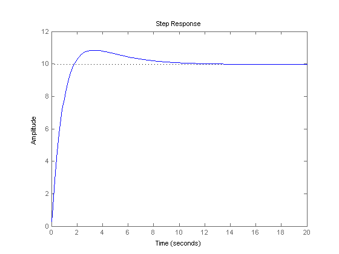
As you can see, the steady-state error has been reduced to near zero. The overshoot is a result of the zero added in the lag controller. For now all of the design criteria have been met and no further iterations are needed; however, you should experiment with different zo and po values to see what their effect is on the closed-loop system response.